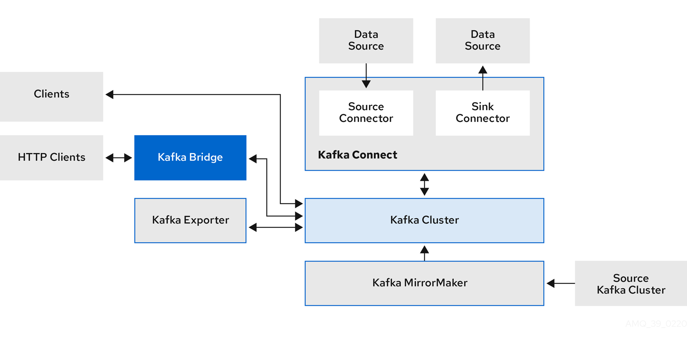
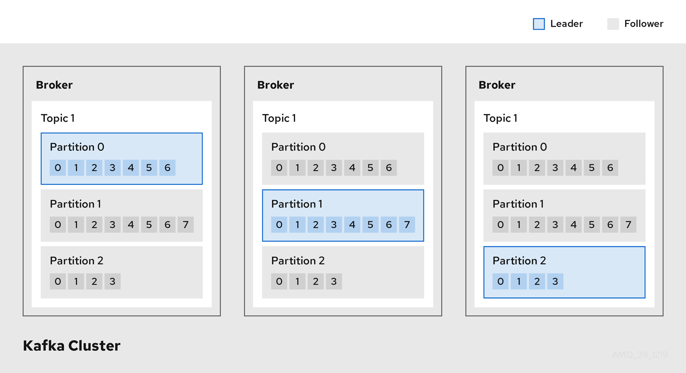
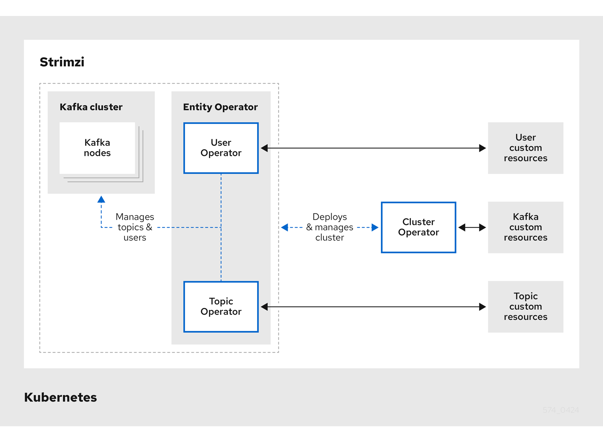
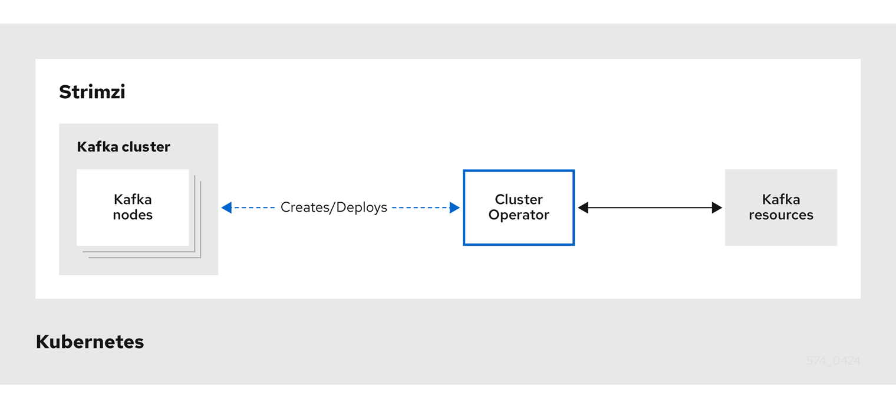
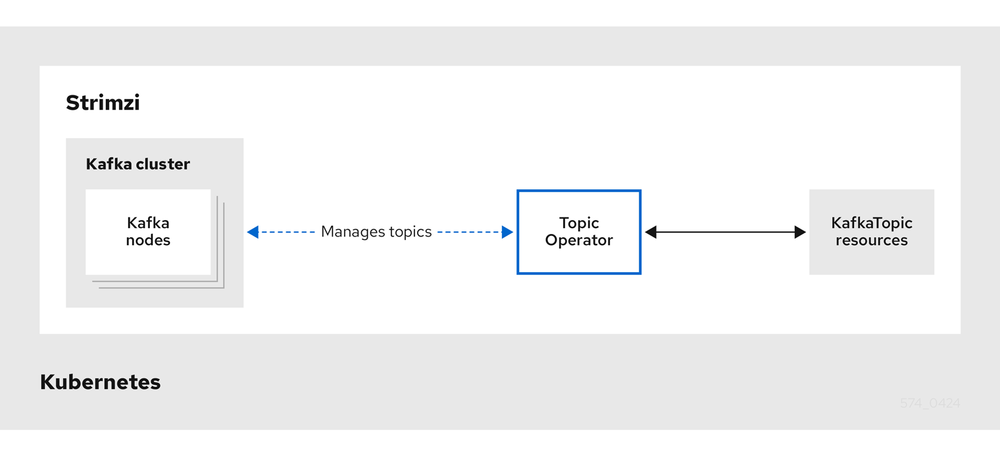

1. Key features
Strimzi simplifies the process of running Apache Kafka within a Kubernetes cluster.
This guide serves as an introduction to Strimzi, outlining key Kafka concepts that are central to operating Strimzi. It briefly explains Kafka’s components, their purposes, and configuration points, including security and monitoring options. Strimzi provides the necessary files to deploy and manage a Kafka cluster, along with example configuration files for monitoring your deployment.
1.1. Kafka capabilities
Kafka’s data stream-processing capabilities and component architecture offer:
-
High-throughput, low-latency data sharing for microservices and other applications
-
Guaranteed message ordering
-
Message rewind/replay from data storage to reconstruct application state
-
Message compaction to remove outdated records in a key-value log
-
Horizontal scalability within a cluster
-
Data replication to enhance fault tolerance
-
High-volume data retention for immediate access
1.2. Kafka use cases
Kafka’s capabilities make it ideal for:
-
Event-driven architectures
-
Event sourcing to log application state changes
-
Message brokering
-
Website activity tracking
-
Operational monitoring through metrics
-
Log collection and aggregation
-
Commit logs for distributed systems
-
Stream processing for real-time data responses
1.3. How Strimzi supports Kafka
Strimzi provides container images and operators for running Kafka on Kubernetes. These operators are designed with specialized operational knowledge to efficiently manage Kafka on Kubernetes.
Strimzi operators simplify:
-
Deploying and running Kafka clusters
-
Deploying and managing Kafka components
-
Configuring Kafka access
-
Securing Kafka access
-
Upgrading Kafka
-
Managing brokers
-
Creating and managing topics
-
Creating and managing users
For detailed information and instructions on using operators to perform these operations, see the guide for Deploying and Managing Strimzi.
2. Strimzi deployment of Kafka
Strimzi enables the deployment of Apache Kafka components to a Kubernetes cluster, typically running as clusters for high availability.
A standard Kafka deployment using Strimzi might include the following components:
-
Kafka cluster of broker nodes as the core component
-
Kafka Connect cluster for external data connections
-
Kafka MirrorMaker cluster to mirror data to another Kafka cluster
-
Kafka Exporter to extract additional Kafka metrics data for monitoring
-
Kafka Bridge to enable HTTP-based communication with Kafka
-
Cruise Control to rebalance topic partitions across brokers
Not all of these components are required, though you need Kafka as a minimum for a Strimzi-managed Kafka cluster. Depending on your use case, you can deploy the additional components as needed. These components can also be used with Kafka clusters that are not managed by Strimzi.
2.1. Kafka component architecture
A KRaft-based Kafka cluster consists of broker nodes responsible for message delivery and controller nodes that manage cluster metadata and coordinate clusters. These roles can be configured using node pools in Strimzi.
Other Kafka components interact with the Kafka cluster for specific tasks.

- Kafka Connect
-
Kafka Connect is an integration toolkit for streaming data between Kafka brokers and other systems using connector plugins. Kafka Connect provides a framework for integrating Kafka with an external data source or target, such as a database, for import or export of data using connectors. Connectors provide the connection configuration needed.
-
A source connector pushes external data into Kafka.
-
A sink connector extracts data out of Kafka
External data is translated and transformed into the appropriate format.
Kafka Connect can be configured to build custom container images with the required connectors.
-
- Kafka MirrorMaker
-
Kafka MirrorMaker replicates data between two Kafka clusters, either in the same data center or across different locations.
- Kafka Bridge
-
Kafka Bridge provides an API for integrating HTTP-based clients with a Kafka cluster.
- Kafka Exporter
-
Kafka Exporter extracts data for analysis as Prometheus metrics, primarily data relating to offsets, consumer groups, consumer lag and topics. Consumer lag is the delay between the last message written to a partition and the message currently being picked up from that partition by a consumer
- Apache ZooKeeper (optional)
-
Apache ZooKeeper provides a cluster coordination service, storing and tracking the status of brokers and consumers. ZooKeeper is also used for controller election. If ZooKeeper is used, the ZooKeeper cluster must be ready before running Kafka. However, since the introduction of KRaft, ZooKeeper is no longer required as Kafka nodes handle cluster coordination and control natively.
3. About Kafka
Apache Kafka is an open-source distributed publish-subscribe messaging system for fault-tolerant real-time data feeds.
For more information about Apache Kafka, see the Apache Kafka documentation.
3.1. How Kafka operates as a message broker
To maximise your experience of using Strimzi, you need to understand how Kafka operates as a message broker.
-
A Kafka cluster comprises multiple nodes.
-
Nodes operating as brokers contain topics that receive and store data.
-
Topics are split by partitions, where the data is written.
-
Partitions are replicated across brokers for fault tolerance.

- Broker
-
A broker orchestrates the storage and passing of messages.
- Topic
-
A topic provides a destination for the storage of data. Each topic is split into one or more partitions.
- Cluster
-
A group of broker instances.
- Partition
-
The number of topic partitions is defined by a topic partition count.
- Partition leader
-
A partition leader handles all producer requests for a topic.
- Partition follower
-
A partition follower replicates the partition data of a partition leader, optionally handling consumer requests.
Topics use a replication factor to configure the number of replicas of each partition within the cluster. A topic comprises at least one partition.
An in-sync replica has the same number of messages as the leader. Configuration defines how many replicas must be in-sync to be able to produce messages, ensuring that a message is committed only after it has been successfully copied to the replica partition. In this way, if the leader fails the message is not lost.
In the Kafka brokers and topics diagram, we can see each numbered partition has a leader and two followers in replicated topics.
3.2. Producers and consumers
Producers and consumers send and receive messages (publish and subscribe) through brokers. Messages comprise an optional key and a value that contains the message data, plus headers and related metadata. The key is used to identify the subject of the message, or a property of the message. Messages are delivered in batches, and batches and records contain headers and metadata that provide details that are useful for filtering and routing by clients, such as the timestamp and offset position for the record.

- Producer
-
A producer sends messages to a broker topic to be written to the end offset of a partition. Messages are written to partitions by a producer on a round robin basis, or to a specific partition based on the message key.
- Consumer
-
A consumer subscribes to a topic and reads messages according to topic, partition and offset.
- Consumer group
-
Consumer groups are used to share a typically large data stream generated by multiple producers from a given topic. Consumers are grouped using a
group.id, allowing messages to be spread across the members. Consumers within a group do not read data from the same partition, but can receive data from one or more partitions. - Offsets
-
Offsets describe the position of messages within a partition. Each message in a given partition has a unique offset, which helps identify the position of a consumer within the partition to track the number of records that have been consumed.
Committed offsets are written to an offset commit log. A
__consumer_offsetstopic stores information on committed offsets, the position of last and next offset, according to consumer group.

4. About Kafka Connect
Kafka Connect is an integration toolkit for streaming data between Kafka brokers and other systems. The other system is typically an external data source or target, such as a database.
Kafka Connect uses a plugin architecture to provide the implementation artifacts for connectors. Plugins allow connections to other systems and provide additional configuration to manipulate data. Plugins include connectors and other components, such as data converters and transforms. A connector operates with a specific type of external system. Each connector defines a schema for its configuration. You supply the configuration to Kafka Connect to create a connector instance within Kafka Connect. Connector instances then define a set of tasks for moving data between systems.
Plugins provide a set of one or more artifacts that define a connector and task implementation for connecting to a given kind of data source. The configuration describes the source input data and target output data to feed into and out of Kafka Connect. The plugins might also contain the libraries and files needed to transform the data.
A Kafka Connect deployment can have one or more plugins, but only one version of each plugin. Plugins for many external systems are available for use with Kafka Connect. You can also create your own plugins.
Strimzi operates Kafka Connect in distributed mode, distributing data streaming tasks across one or more worker pods. A Kafka Connect cluster comprises a group of worker pods. Each connector is instantiated on a single worker. Each connector comprises one or more tasks that are distributed across the group of workers. Distribution across workers permits highly scalable pipelines.
Workers convert data from one format into another format that’s suitable for the source or target system. Depending on the configuration of the connector instance, workers might also apply transforms (also known as Single Message Transforms, or SMTs). Transforms adjust messages, such as filtering certain data, before they are converted. Kafka Connect has some built-in transforms, but other transformations can be provided by plugins if necessary.
4.1. How Kafka Connect streams data
Kafka Connect uses connector instances to integrate with other systems to stream data.
Kafka Connect loads existing connector instances on start up and distributes data streaming tasks and connector configuration across worker pods. Workers run the tasks for the connector instances. Each worker runs as a separate pod to make the Kafka Connect cluster more fault tolerant. If there are more tasks than workers, workers are assigned multiple tasks. If a worker fails, its tasks are automatically assigned to active workers in the Kafka Connect cluster.
The main Kafka Connect components used in streaming data are as follows:
-
Connectors to create tasks
-
Tasks to move data
-
Workers to run tasks
-
Transforms to manipulate data
-
Converters to convert data
4.1.1. Connectors
Connectors can be one of the following type:
-
Source connectors that push data into Kafka
-
Sink connectors that extract data out of Kafka
Plugins provide the implementation for Kafka Connect to run connector instances. Connector instances create the tasks required to transfer data in and out of Kafka. The Kafka Connect runtime orchestrates the tasks to split the work required between the worker pods.
MirrorMaker 2 also uses the Kafka Connect framework. In this case, the external data system is another Kafka cluster. Specialized connectors for MirrorMaker 2 manage data replication between source and target Kafka clusters.
|
Note
|
In addition to the MirrorMaker 2 connectors, Kafka provides two connectors as examples:
|
The following source connector diagram shows the process flow for a source connector that streams records from an external data system. A Kafka Connect cluster might operate source and sink connectors at the same time. Workers are running in distributed mode in the cluster. Workers can run one or more tasks for more than one connector instance.

-
A plugin provides the implementation artifacts for the source connector
-
A single worker initiates the source connector instance
-
The source connector creates the tasks to stream data
-
Tasks run in parallel to poll the external data system and return records
-
Transforms adjust the records, such as filtering or relabelling them
-
Converters put the records into a format suitable for Kafka
-
The source connector is managed using KafkaConnectors or the Kafka Connect API
The following sink connector diagram shows the process flow when streaming data from Kafka to an external data system.

-
A plugin provides the implementation artifacts for the sink connector
-
A single worker initiates the sink connector instance
-
The sink connector creates the tasks to stream data
-
Tasks run in parallel to poll Kafka and return records
-
Converters put the records into a format suitable for the external data system
-
Transforms adjust the records, such as filtering or relabelling them
-
The sink connector is managed using KafkaConnectors or the Kafka Connect API
4.1.2. Tasks
Data transfer orchestrated by the Kafka Connect runtime is split into tasks that run in parallel. A task is started using the configuration supplied by a connector instance. Kafka Connect distributes the task configurations to workers, which instantiate and execute tasks.
-
A source connector task polls the external data system and returns a list of records that a worker sends to the Kafka brokers.
-
A sink connector task receives Kafka records from a worker for writing to the external data system.
For sink connectors, the number of tasks created relates to the number of partitions being consumed.
For source connectors, how the source data is partitioned is defined by the connector.
You can control the maximum number of tasks that can run in parallel by setting tasksMax in the connector configuration.
The connector might create fewer tasks than the maximum setting.
For example, the connector might create fewer tasks if it’s not possible to split the source data into that many partitions.
|
Note
|
In the context of Kafka Connect, a partition can mean a topic partition or a shard of data in an external system. |
4.1.3. Workers
Workers employ the connector configuration deployed to the Kafka Connect cluster. The configuration is stored in an internal Kafka topic used by Kafka Connect. Workers also run connectors and their tasks.
A Kafka Connect cluster contains a group of workers with the same group.id.
The ID identifies the cluster within Kafka.
The ID is assigned in the worker configuration through the KafkaConnect resource.
Worker configuration also specifies the names of internal Kafka Connect topics.
The topics store connector configuration, offset, and status information.
The group ID and names of these topics must also be unique to the Kafka Connect cluster.
Workers are assigned one or more connector instances and tasks.
The distributed approach to deploying Kafka Connect is fault tolerant and scalable.
If a worker pod fails, the tasks it was running are reassigned to active workers.
You can add to a group of worker pods through configuration of the replicas property in the KafkaConnect resource.
4.1.4. Transforms
Kafka Connect translates and transforms external data. Single-message transforms change messages into a format suitable for the target destination. For example, a transform might insert or rename a field. Transforms can also filter and route data. Plugins contain the implementation required for workers to perform one or more transformations.
-
Source connectors apply transforms before converting data into a format supported by Kafka.
-
Sink connectors apply transforms after converting data into a format suitable for an external data system.
A transform comprises a set of Java class files packaged in a JAR file for inclusion in a connector plugin. Kafka Connect provides a set of standard transforms, but you can also create your own.
4.1.5. Converters
When a worker receives data, it converts the data into an appropriate format using a converter.
You specify converters for workers in the worker config in the KafkaConnect resource.
Kafka Connect can convert data to and from formats supported by Kafka, such as JSON or Avro. It also supports schemas for structuring data. If you are not converting data into a structured format, you don’t need to enable schemas.
|
Note
|
You can also specify converters for specific connectors to override the general Kafka Connect worker configuration that applies to all workers. |
5. Kafka Bridge interface
The Kafka Bridge provides a RESTful interface that allows HTTP-based clients to interact with a Kafka cluster. It offers the advantages of a HTTP API connection to Strimzi for clients to produce and consume messages without the requirement to use the native Kafka protocol.
The API has two main resources — consumers and topics — that are exposed and made accessible through endpoints to interact with consumers and producers in your Kafka cluster. The resources relate only to the Kafka Bridge, not the consumers and producers connected directly to Kafka.
5.1. HTTP requests
The Kafka Bridge supports HTTP requests to a Kafka cluster, with methods to perform operations such as the following:
-
Send messages to a topic.
-
Retrieve messages from topics.
-
Retrieve a list of partitions for a topic.
-
Create and delete consumers.
-
Subscribe consumers to topics, so that they start receiving messages from those topics.
-
Retrieve a list of topics that a consumer is subscribed to.
-
Unsubscribe consumers from topics.
-
Assign partitions to consumers.
-
Commit a list of consumer offsets.
-
Seek on a partition, so that a consumer starts receiving messages from the first or last offset position, or a given offset position.
The methods provide JSON responses and HTTP response code error handling. Messages can be sent in JSON or binary formats.
-
To view the API documentation, including example requests and responses, see Using the Kafka Bridge.
5.2. Supported clients for the Kafka Bridge
You can use the Kafka Bridge to integrate both internal and external HTTP client applications with your Kafka cluster.
- Internal clients
-
Internal clients are container-based HTTP clients running in the same Kubernetes cluster as the Kafka Bridge itself. Internal clients can access the Kafka Bridge on the host and port defined in the
KafkaBridgecustom resource. - External clients
-
External clients are HTTP clients running outside the Kubernetes cluster in which the Kafka Bridge is deployed and running. External clients can access the Kafka Bridge through an OpenShift Route, a loadbalancer service, or using an Ingress.

6. Strimzi Operators
Operators are a method of packaging, deploying, and managing Kubernetes applications. They provide a way to extend the Kubernetes API and simplify the administration tasks associated with specific applications.
Strimzi operators support tasks related to a Kafka deployment. Strimzi custom resources provide the deployment configuration. This includes configuration for Kafka clusters, topics, users, and other components. Leveraging custom resource configuration, Strimzi operators create, configure, and manage Kafka components within a Kubernetes environment. Using operators reduces the need for manual intervention and streamlines the process of managing Kafka in a Kubernetes cluster.
Strimzi provides the following operators for managing a Kafka cluster running within a Kubernetes cluster.
- Cluster Operator
-
Deploys and manages Apache Kafka clusters, Kafka Connect, Kafka MirrorMaker, Kafka Bridge, Kafka Exporter, Cruise Control, and the Entity Operator
- Entity Operator
-
Comprises the Topic Operator and User Operator
- Topic Operator
-
Manages Kafka topics
- User Operator
-
Manages Kafka users
The Cluster Operator can deploy the Topic Operator and User Operator as part of an Entity Operator configuration at the same time as a Kafka cluster.

6.1. Cluster Operator
Strimzi uses the Cluster Operator to deploy and manage clusters. By default, when you deploy Strimzi a single Cluster Operator replica is deployed. You can add replicas with leader election so that additional Cluster Operators are on standby in case of disruption.
The Cluster Operator manages the clusters of the following Kafka components:
-
Kafka (including ZooKeeper, Entity Operator, Kafka Exporter, and Cruise Control)
-
Kafka Connect
-
Kafka MirrorMaker
-
Kafka Bridge
The clusters are deployed using custom resources.
For example, to deploy a Kafka cluster:
-
A
Kafkaresource with the cluster configuration is created within the Kubernetes cluster. -
The Cluster Operator deploys a corresponding Kafka cluster, based on what is declared in the
Kafkaresource.
The Cluster Operator can also deploy the following Strimzi operators through configuration of the Kafka resource:
-
Topic Operator to provide operator-style topic management through
KafkaTopiccustom resources -
User Operator to provide operator-style user management through
KafkaUsercustom resources
The Topic Operator and User Operator function within the Entity Operator on deployment.
You can use the Cluster Operator with a deployment of Strimzi Drain Cleaner to help with pod evictions. By deploying the Strimzi Drain Cleaner, you can use the Cluster Operator to move Kafka pods instead of Kubernetes. Strimzi Drain Cleaner annotates pods being evicted with a rolling update annotation. The annotation informs the Cluster Operator to perform the rolling update.

6.2. Topic Operator
The Topic Operator provides a way of managing topics in a Kafka cluster through KafkaTopic resources.

The Topic Operator manages Kafka topics by watching for KafkaTopic resources that describe Kafka topics, and ensuring that they are configured properly in the Kafka cluster.
When a KafkaTopic is created, deleted, or changed, the Topic Operator performs the corresponding action on the Kafka topic.
You can declare a KafkaTopic as part of your application’s deployment and the Topic Operator manages the Kafka topic for you.
6.3. User Operator
The User Operator provides a way of managing users in a Kafka cluster through KafkaUser resources.
The User Operator manages Kafka users for a Kafka cluster by watching for KafkaUser resources that describe Kafka users,
and ensuring that they are configured properly in the Kafka cluster.
When a KafkaUser is created, deleted, or changed, the User Operator performs the corresponding action on the Kafka user.
You can declare a KafkaUser resource as part of your application’s deployment and the User Operator manages the Kafka user for you.
You can specify the authentication and authorization mechanism for the user.
You can also configure user quotas that control usage of Kafka resources to ensure, for example, that a user does not monopolize access to a broker.
When the user is created, the user credentials are created in a Secret.
Your application needs to use the user and its credentials for authentication and to produce or consume messages.
In addition to managing credentials for authentication, the User Operator also manages authorization rules by including a description of the user’s access rights in the KafkaUser declaration.
6.4. Feature gates in Strimzi Operators
Strimzi operators use feature gates to enable or disable specific features and functions. Enabling a feature gate alters the behavior of the associated operator, introducing the corresponding feature to your Strimzi deployment.
Feature gates are set in the operator configuration and have three stages of maturity: alpha, beta, or graduated. Graduated feature gates have reached General Availability (GA) and are permanently enabled features.
For more information, see Feature gates.
7. Configuring Kafka
Strimzi enables the deployment of Kafka components on Kubernetes through highly configurable custom resources. These resources leverage Custom Resource Definitions (CRDs) to extend Kubernetes capabilities, offering a flexible way to manage Kafka components. After a new custom resource type is added to your cluster by installing a CRD, you can create instances of the resource based on its specification. Many additional configuration options can be specified in a custom resource, some common and some specific to a particular component.
Use custom resources to configure the following components:
-
Kafka clusters
-
Node pools for Kafka clusters
-
MirrorMaker source and target clusters
-
Kafka Connect
-
Kafka Bridge
Strimzi provides example configuration files, which can serve as a starting point when building your own Kafka component configuration for deployment.
For detailed configuration instructions and examples, see the guide for Deploying and Managing Strimzi.
8. Securing Kafka
A secure deployment of Strimzi might encompass one or more of the following security measures:
- Encryption
-
Strimzi supports Transport Layer Security (TLS), a protocol for encrypted communication.
-
Communication is always encrypted between Strimzi components.
-
To set up TLS-encrypted communication between Kafka and clients, you configure listeners in the
Kafkacustom resource.
-
- Authentication
-
Kafka listeners use authentication to ensure a secure client connection to the Kafka cluster. Clients can also be configured for mutual authentication. Security credentials are created and managed by the Cluster and User Operator.
Supported authentication mechanisms:
-
mTLS authentication (on listeners with TLS-enabled encryption)
-
SASL SCRAM-SHA-512
-
OAuth 2.0 token based authentication
-
Custom authentication (supported by Kafka)
-
- Authorization
-
Authorization controls the operations that are permitted on Kafka brokers by specific clients or users.
Supported authorization mechanisms:
-
Simple authorization using ACL rules
-
OAuth 2.0 authorization (if you are using OAuth 2.0 token-based authentication)
-
Open Policy Agent (OPA) authorization
-
Custom authorization (supported by Kafka)
-
- Federal Information Processing Standards (FIPS)
-
Strimzi is designed to run on FIPS-enabled Kubernetes clusters to ensure data security and system interoperability. For more information about the NIST validation program and validated modules, see Cryptographic Module Validation Program on the NIST website.
9. Monitoring Kafka
Monitoring data allows you to monitor the performance and health of Strimzi. You can configure your deployment to capture metrics data for analysis and notifications.
Metrics data is useful when investigating issues with connectivity and data delivery. For example, metrics data can identify under-replicated partitions or the rate at which messages are consumed. Alerting rules can provide time-critical notifications on such metrics through a specified communications channel. Monitoring visualizations present real-time metrics data to help determine when and how to update the configuration of your deployment. Example metrics configuration files are provided with Strimzi.
You can employ the following tools for metrics and monitoring:
- Prometheus
-
Prometheus pulls metrics from Kafka, ZooKeeper and Kafka Connect clusters. The Prometheus Alertmanager plugin handles alerts and routes them to a notification service.
- Kafka Exporter
-
Kafka Exporter adds additional Prometheus metrics.
- Grafana
-
Grafana Labs provides dashboard visualizations of Prometheus metrics.
- OpenTelemetry
-
OpenTelemetry complements the gathering of metrics data by providing a facility for end-to-end tracking of messages through Strimzi.
- Cruise Control
-
Cruise Control monitors data distribution and performs data rebalances, based on workload data, across a Kafka cluster.